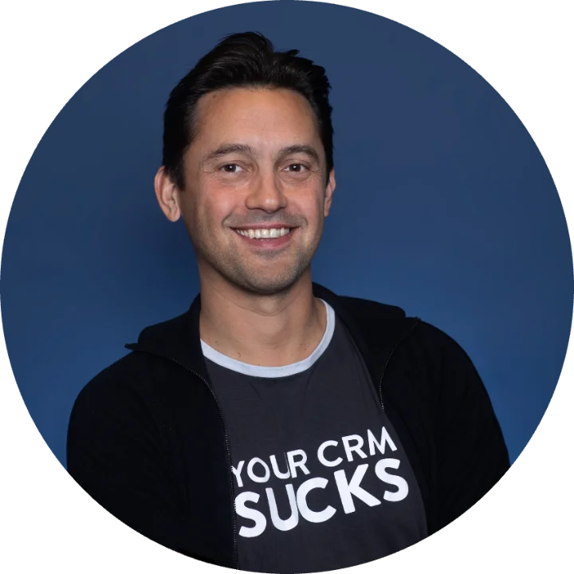

We help founders go upstream_
Go Upstream AB, founded by George Brontén, helps entrepreneurs on their journey — as a thinking partner on strategy, product, and go-to-market — and sometimes as an angel investor. Our home turf is technology, first and foremost SaaS.
25+ years of doing the work
Go Upstream is not a fund with a clock ticking. It is the personal company of George Brontén — a serial entrepreneur who has spent 25+ years building software companies from first line of code to profitable scale and exit — created to share that journey with other founders.
What we bring is operating experience: product strategy, go-to-market for complex B2B sales, pricing, positioning, and the patience to build companies that last. When the fit is right, we also invest — but the partnership always comes first.
Companies and communities we're part of
Upstream
Software solutions for proactive, automated IT operations in the Nordics. Founded, scaled to 300+ business customers, and sold.
upstream.se →Membrain
The B2B Growth Platform for companies where HOW you sell matters. Sales execution, coaching and CRM — used by clients in 80+ countries.
membrain.com →Founders Alliance
Sweden's leading network for entrepreneurs. George is an ambassador member and small shareholder — sharing their burning passion for entrepreneurship.
foundersalliance.com →Helny
Software for second-hand and antique shops, built together with Kapet Second hand in Umeå. Less admin, more profit — one photograph is enough, and the item lands in the till, on Instagram and on Tradera.
helny.app →ABKoll
A subscription service watching the statutory deadlines around a Swedish limited company's annual report — built for owners of small and dormant companies, where the filing is easy to forget and expensive to miss.
abkoll.se →Founders who zoom out, then in
The founders we back can work at both altitudes: the whole system one moment, the single broken step the next. We partner selectively, mostly in Nordic B2B SaaS, at stages where operating experience makes a real difference — and when the fit is right, we invest as angels. If this sounds like you, we'd like to hear from you.

Meet George Brontén
George is a life-long entrepreneur with 25+ years in the software industry. He founded Upstream, building it into a leading Nordic provider of IT management solutions before its successful exit, and is the founder and majority owner of Membrain, the award-winning B2B Growth Platform used in 80+ countries.
He writes about the art and science of complex sales, and invests in founders who share his belief that great companies are built on craft, patience, and solving problems at the source.
Start a conversation
Go Upstream is more than capital. We act as a thinking partner to founders — a sounding board on strategy, product, and go-to-market — and make angel investments in companies we believe in.
If that resonates, reach out and tell us your why: the problem you can't stop thinking about, and the long-term vision you're building toward.